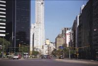
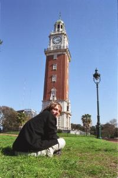

|
Samedi 8 septembre
On arrive à Buenos Aires vers 8H00 du mat, après quelques 16 heures de bus.
Mais le moins confortable des bus argentins, c'est quand même le luxe par rapport
à ce qu'on a pu utiliser comme moyens de transport en Asie. On arrive donc en
pleine forme, la nuit a été plutôt bonne. Ce n'est pas l'avis de n otre voisin
de siège qui semble n'apprécier que modérément de passer la nuit ailleurs que
dans un lit. C'est amusant, il nous a appelés par nos prénoms avant même de
nous avoir parlé. En fait, il est douanier et c'est lui qui a tamponné nos passeports
lorsqu'on a passé la frontière Chili-Argentine. Et il a retenu nos noms. Il
a de la mémoire... le monde est vraiment petit.
On a dégotté un hôtel et un tas d'informations grâce à l'office du tourisme.
Chouette, on a la téloche dans notre chambre!
On a quitté la Patagonie, c'est sûr. Ce matin, en se réveillant dans le bus,
on a vu des arbres. Il y a encore des immenses étendues, mais c'est davantage
vert, les plantes ne sont pas brûlées pas le vent et le froid. En plus, on a
eu droit à un lever de soleil avec brume, prairies et chevaux. Elle est pas
belle la vie?
Dimanche 9 septembre
Hier, on n'a pas vu beaucoup de monde dans les rues. On a flâné au centre ville,
du côté des quais aussi, mais il n'y avait presque personne. Même les rues piétonnes
ne semblaient guère plus animées qu'une petite ville de province. Le seul endroit
où on a vu la foule, c'est dans le quartier de la Recoleta où des petits vendeurs
de tout et de rien côtoyaient les gens qui se donnaient en spectacle, ceux qui
jonglaient, ceux qui racontaient des blagues (que dit la grenouille à Bob Marley?
raaae...ggae) ou encore celui qui avait sorti tout le matos pour un petit concert
en plein air suivi par les plus jeunes assis sur la pelouse. Et puis il paraît
que les week-ends, tout le monde est aussi à Palermo qui abrite un immense parc.
Aujourd'hui, c'est très calme du côté du centre ville. Par contre, ça s'agite
beaucoup plus lorsqu'on arrive dans le quartier de San Telmo. Sur uhne place
est installé un marché aux puces. Mais si on est venu ici, c'est surtout pour
une autre raison: le tango. C'est dans ce quartier même de Buenos Aires qu'est
née cette danse. A l'époque, on le dansait entre hommes dans les quartiers pauvres.
Et pour cause, il a été inventé par des hommes qui vivaient seuls dans la capitale,
attirés par une ville en plein développement. Et puis il y a eu Carlos Gardel.
C'est un véritable héros national aujourd'hui qui a envoûté tout le pays grâce
à sa voix. Grâce à lui, le tango a été joué partout, jusque dans les milieux
bourgeois. A tel point que l'Eglise l'a interdit, trop sensuel. Aujourd'hui,
même si les spectacles de tango qu'on voit dans les rues sont sympas, ça ne
semble plus être à ce point l'engouement et les spectateurs sont surtout des
touristes étrangers et argentins venus à la capitale.
Changement de quartier, changement de décors, nous voilà dans La Boca, un quartier
très très populaire. Une foule est en train de s'activer et de rejoindre le
stade. Celui de La Boca junior. Paraît que c'est connu et mythique... Et puis,
on arrive au Caminoto, une rue de toutes les couleurs, un quartier où les habitantws
ont décidé de rendre leurs conditions de vie un peu plus gaies en peignant leurs
maisons en bleu, en jaune, en rouge ou encore en vert. Je ne sais pas si ça
marche, mais en tout cas, le résultat est plutôt réussi. Mais on dirait qu'on
n'est pas les seuls à avoir entendu parler de cette rue. Des bus entiers de
touristes la remplissent déjà. En repartant vers notre hôtel, on croise les
bus des supporters de l'autre équipe, celle qui jouait contre La Boca. Ils sonht
entourés de policiers et survolés par des hélicoptères de la police! Ils ont
perdu, ils sont tristes. C'est sans doute pour ça qu'il y en a qui nous insultent
depuis le bus... Les pauvres.
Lundi 10 septembre
La banlieue très pauvre, La Boca populaire, San Telmo avec ses maisons basses
ou encore le centre ville riche aux immeubles classes. Buenos Aires est une
ville aux multiples visages. Et c'est aussi une ville très cosmopolite. C'est
la première fois depuis longtemps qu'on voit des gens noirs... si, si, tout
noirs! Et même qu'on en a vu hier qui jouaient des percussions et même que c'était
vraiment sympa. On n'est plus au Chili où tout le monde sort un peu du même
moule. Cheveux noirs pour tout le monde et le type bien espagnol. La ville est
aujourd'hui très animée. Il y a des gens partout sur les trottoirs et des voitures
partout dans les rues. Je ne sais pas où tout ce petit monde disparaît le week-end...
Mardi 11 septembre
Nous voilà dans le bus pour les chutes d'Iguazu. Les bus sont vraiment classes.
Les sièges s'inclinent tellement qu'on a l'impression d'être couché, il y a
une place folle pour les jambes et on a même droit à un plat chaud pour le dîner.
MAis tout cela se paye, ...50 dollars. Autour de Buenos Aires, c'est la pampa,
avec de grandes étendues avec des vaches partout, on est au pays de la viande.
Suite du voyage : Iguazu
|

Argentine
Buenos Aires
|

Argentine
Buenos Aires
|
Argentine
Buenos Aires
|
Argentine
Buenos Aires
|
|
|